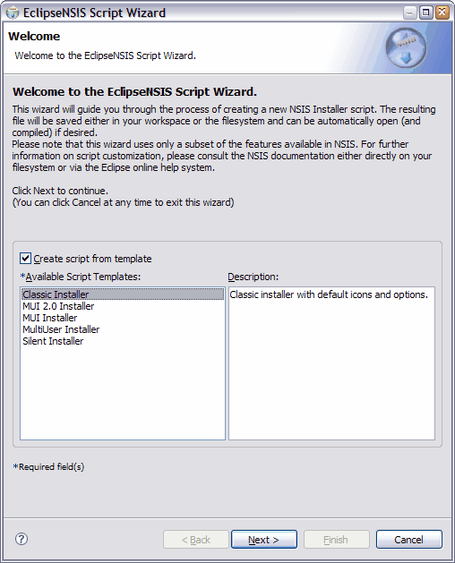

Script Wizard
Welcome
The Welcome page provides an introduction to the Script Wizard. It also provides the ability to select a template for creating the script. Script templates are managed using the Script Templates Preferences page.

- Create script from template
- Option to create the script using a template. Script templates are maintained using the Script Templates Preferences page. ← Back
- Available Script Templates
- A list of script templates which have been enabled for use. ← Back
- Description
- Description of the selected script template. ← Back
Previous | Contents | Next
Copyright © 2004-2010 Sunil Kamath (IcemanK).